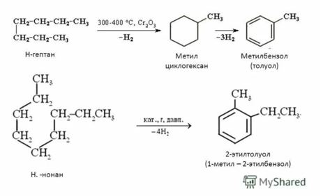
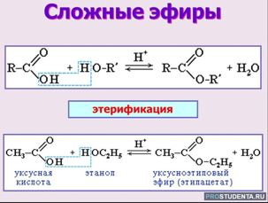
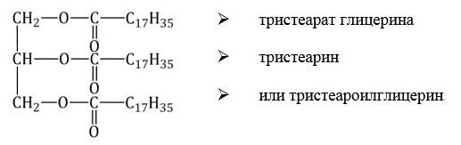
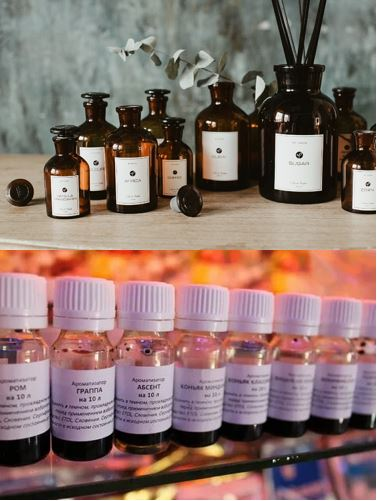

Ароматизация на основе сложных эфиров
За двести лет своего существования синтетическая органическая химия создала более 20 миллионов органических веществ. Органический синтез приобретает все более широкий размах, прежде всего в связи с необходимостью удовлетворения разнообразных и постоянно растущих потребностей общества, в том числе и эстетических.
Окружающая среда всегда «окружала» человека запахами, которые невидимым образом влияли и влияют поныне на его поведение, как физическое, так и эмоциональное. «Там, где сладко пахнет – там и бог», - считали люди и жгли благовонные растения, смолы и бальзамы в религиозных целях – чтобы угодить богам. В этом смысле вся история человечества пропахла парфюмерией. Парфюмерия в современном понимании – это создание таких душистых композиций, как духи, одеколоны, лосьоны, душистые воды и туалетные воды. Основная цель их использования относится к области эстетики, улучшения «вкуса жизни»: приданию коже, волосам человека, его одежде, постельному белью и т. п. приятного для него и окружающих запаха. Подобные парфюмерные изделия употребляются и с гигиенической целью.Ароматизация — образование ароматических соединений из соединений циклических и других типов.
В промышленности широко применяют процессы ароматизации продуктов переработки нефти для увеличения содержания в них ароматических углеводородов. Наибольшее значение имеет каталитический риформинг бензиновых фракций. Процессы ароматизации протекают в условиях биохимического синтеза в растениях, животных, грибах и микроорганизмах.

Сложные эфиры или эсте́ры (от древнегреческого αἰθήρ — «эфир») — это класс соединений на основе неорганических (минеральных) или органических (карбоновых) одно- или многоосновных кислот, у которых атом водорода в гидроксогруппе замещен на радикал.

Классификация сложных эфиров
По числу карбоксильных групп:
• Cложные эфиры одноосновных карбоновых кислот — содержат одну карбоксильную группу -СОО-. Общая формула CnH2nO2. Например: метилформиат (H-COO-CH3).
• Cложные эфиры многоатомных спиртов — содержат две и более карбоксильные группы -СОО-. Например: тристеарат глицерина.

• Сложные эфиры многоосновных органических кислот. Например: общая формула сложных эфиров двухосновных карбоновых кислот(CnH2n-2O4)
Получение и применение сложных эфиров
Основной способ получения – взаимодействие карбоновой кислоты и спирта (реакция этерификации), катализируемое кислотой и сопровождаемое выделением воды.
Реакция этерификации в условиях кислотного катализа обратима. Обратный процесс – расщепление сложного эфира при действии воды с образованием карбоновой кислоты и спирта – называют гидролизом сложного эфира (RCOOR' + H2O (H+) ↔ RCOOH + R'OH)
Применение
Сложные эфиры широко распространены в природе. Они находят применение в технике и различных отраслях промышленности как хорошие растворители органических веществ, пластификаторы, ароматизаторы.
• Этилформиат и этилацетат используются как растворители целлюлозных лаков (на основе нитроцеллюлозы и ацетилцеллюлозы).
• Сложные эфиры на основе низших спиртов и кислот используют в пищевой промышленности при создании фруктовых эссенций, а сложные эфиры на основе ароматических спиртов – в парфюмерной промышленности.
• Из восков изготавливают политуры, смазки, пропиточные составы для бумаги (вощеная бумага) и кожи, они входят и в состав косметических кремов и лекарственных мазей.
• Жиры вместе с углеводами входят в состав всех растительных и животных клеток, накапливаясь в организме, играют роль энергетического запаса.
Животные и растительные жиры представляют собой сырье для получения высших карбоновых кислот, моющих средств и глицерина, используемого в косметической промышленности и как компонент различных смазок.
• Эфиры серной кислоты используют в органическом синтезе как алкилирующие (вводящие в соединение алкильную группу) реагенты, а эфиры фосфорной кислоты – как инсектициды, а также добавки к смазочным маслам.
• Являются основой таких лекарственных средств, как салол, валидол и др. Как местнораздражающее и обезболивающее средство широко использовался метилсалицилат, в настоящее время вытесненный более эффективными средствами.
Эфиры низших кислот входят в состав многих растительных эфирных масел и благодаря приятным запахам разнообразных фруктов применяются в парфюмерной, косметической и пищевой промышленности.
Ароматы сложных эфиров низших алифатических кислот и спиртов Формиаты
Формиаты
1. СН3СООСН2С6Н5 – бензилацетат – фруктовый запах (жасмин)
2. НСООС2Н5 – этилформиат – фруктовый, ромовый запах
3. НСООСН2СН2СНСН3 – изоамилформиат – сливовый запах
Ацетаты
4. СН3СООС2Н5 – этилацетат – фруктовый запах
5. СН3СООС3Н7 – пропилацетат
6. СН3СОО(СН2)3СН3 – бутилацетат
7. СН3СООСН2СНСН3 – изобутилацетат
8. СН3СООСН2СН2СНСН3 – изоамилацетат – фруктово-грушевый запах
9. СН3СОО(СН2)5СН3 – гексилацетат
Пропионаты
10. СН3СН2СОО(СН2)3СН3 – бутилпропионат – фруктовый запах
11. СН3СН2СООСН2СН2СНСН3 – изоамилпропионат – бергамотный, абрикосово-сливовый запах
Бутираты
12. СН3СН2СН2СООСН3 – метилбутират – яблочный запах
13. СН3СН2СН2СООС2Н5 – этилбутират – ананасовый запах
14. СН3СН2СН2СОО(СН2)3СН3 – бутилбутират – фруктовый, масляный запах!
15. СН3СН2СН2СООСН2СН2СНСН3 – изоамилбутират – сливовый, грушевый запах
16. СН3СНСОО(СН2)8СН3 – нонилизобутират – цветочно-фруктовый запах!
17. СН3СНСН2СООС3Н7 – пропил – фруктовый запах
Ароматы сложных эфиров арилалифатических спиртов с алифатическими кислотами
Эфиры бензилового спирта и его производных
1. СН3СООСН2С6Н5 – бензилацетат – фруктовый запах (жасмин)
2. СН3СООСН2С6Н4ОСН3 – 4-метоксифенил-метилацетат – фруктово-цветочный запах
Эфиры 1-фенилэтанола и его производных
3. СН3СН2СООСН2С6Н5 – бензилпропионат – фруктовый запах + жасмин
4. СН3(СН2)10СООСН2 СН2СН2 – бензиллаурат – жирный запах
Эфиры 2-фенилэтанола
5. НСООСН2СН2С6Н5 – фенилэтилформиат – запах хризантемы и розы
6. СН3СООСН2СН2С6Н5 – фенилэтилацетат – фруктовый запах +зелень
7. СН3СН2СООСН2СН2С6Н5 – фенилэтилпропионат – запах бергамота, абрикоса и сливы
8. СН3СН2СН2СООСН2СН2С6Н5 – фенилэтилбутират – фруктовый запах
9. СН3СНСООСН2СН2С6Н5 – фенилэтилизобутират – фруктовый запах (с оттенком запаха розы)
Ароматы сложных эфиров бензойной кислоты
1. С6Н5СООСН3 – метилбензоат – цветочный запах (иланговый)
2. С6Н5СООС2Н5 – этилбензоат – цветочный запах (иланговый оттенок)
3. С6Н5СООСН2СНСН3 – изобутилбензоат – цветочный запах (роза)
4. С6Н5СООСН2СН2СНСН3 – изоамилбензоат – цветочный запах (с оттенком фруктового запаха)
5. С6Н5СООСН2С6Н5 – бензилбензоат – бальзамический запах
6. С6Н5СООСН2СН2С6Н5 – 2-фенилэтилбензоат – запах розы ( с оттенком медового запаха)

"Химия - интересная наука" - Место, где вы можете получить теоритическую и практичесткую информацию о замечательной науке - химии.